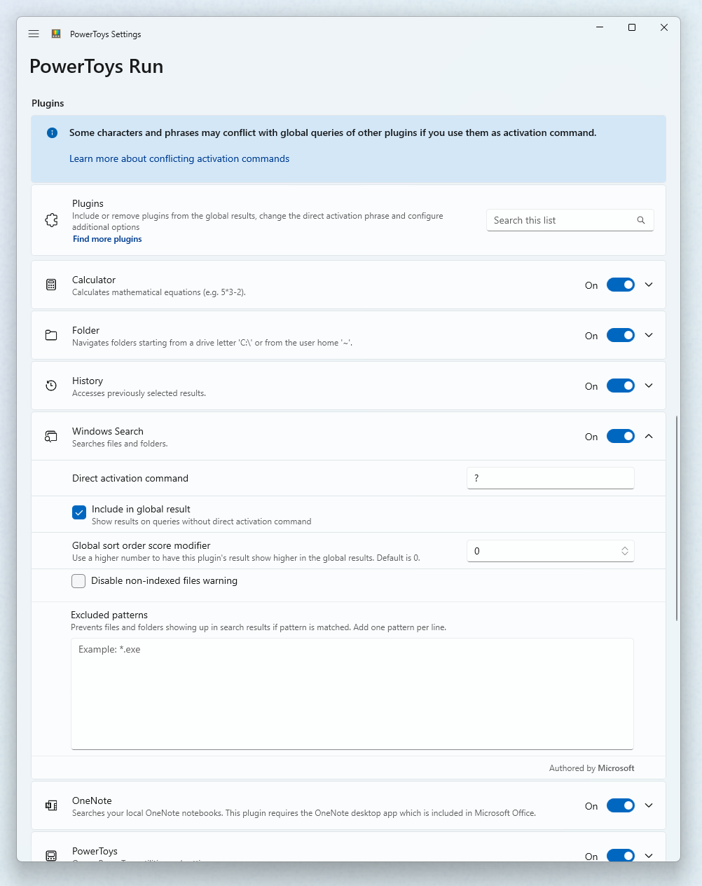
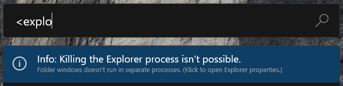
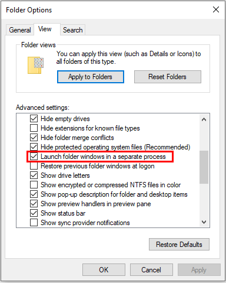
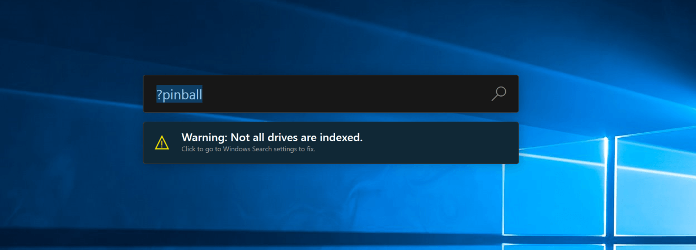
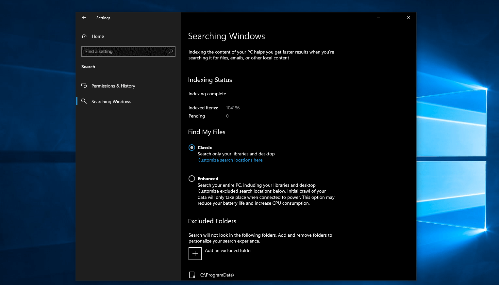
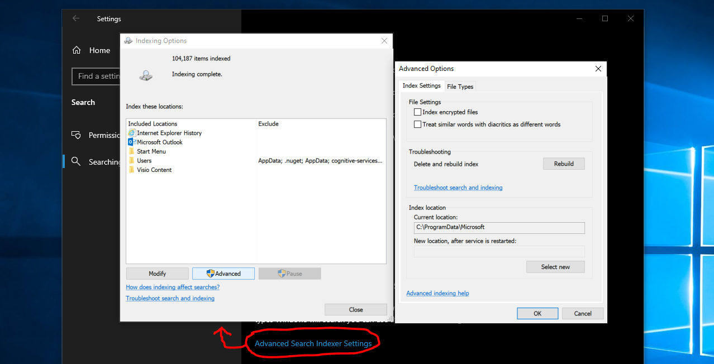

PowerToys Run utility
PowerToys Run is a quick launcher for Windows power users that provides instant access to applications, files, calculator functions, and system commands without sacrificing performance. This free, open-source utility is modular and supports additional plugins to enhance your productivity workflow.
To use PowerToys Run, select Alt+Space and start typing! (Note that the keyboard shortcut can be changed in the settings window.)
Important
For this utility to work, PowerToys must be running in the background and Run must be enabled.
Note
PowerToys Run is getting an upgrade to v2! Check out the Command Palette, PowerToys Run's evolution.
Features
PowerToys Run features include:
- Search for applications, folders or files
- Search for running processes (previously known as Window Walker)
- Clickable buttons with keyboard shortcuts (such as Open as administrator or Open containing folder)
- Invoke Shell Plugin using
>(for example,> Shell:startupwill open the Windows startup folder) - Do a simple calculation using calculator
- Execute system commands
- Get time and date information
- Convert units
- Calculate hashes
- Generate GUIDs
- Open web pages or start a web search
Settings
The following general options are available on the PowerToys Run settings page.
| Setting | Description |
|---|---|
| Activation shortcut | Define the keyboard shortcut to show/hide PowerToys Run. |
| Use centralized keyboard hook | Try this setting if there are issues with the shortcut (PowerToys Run might not get focus when triggered from an elevated window). |
| Ignore shortcuts in full-screen mode | When in full-screen (F11), PowerToys Run won't be engaged with the shortcut. |
| Input smoothing | Add a delay to wait for more input before executing a search. |
| Immediate plugins | How many milliseconds a plugin that makes the UI wait should wait before showing results. |
| Background execution plugins | How many milliseconds a plugin that executes in the background should wait before showing results. |
| Number of results shown before scrolling | The maximum number of results shown without scrolling. |
| Clear the previous query on opening | When opened, previous searches will not be highlighted. |
| Results order tuning | Fine tunes the ordering of the displayed results. |
| Selected item weight | Use a higher number to get selected results to rise faster (Default: 5, 0 to disable). |
| Wait for slower plugin results before selecting top item in results | Selecting this can help preselect the top, more relevant result, but at the risk of jumpiness. |
| Tab through context buttons | When enabled, you can tab through the context buttons before tabbing to the next result. |
| Use Pinyin | Use Pinyin on the search query. This feature is experimental and may not work for every plugin. |
| Generate thumbnails from files | Thumbnails will be generated for files in the results list (this may affect speed and stability). |
| Preferred monitor position | If multiple displays are in use, PowerToys Run can be opened on: • Primary display • Display with mouse cursor • Display with focused window. |
| Theme | Change the theme used by PowerToys Run. |
| Plugin hints | Choose which plugin keywords to show when the search box is empty. |
| Text size (pt) | Change the text size used by PowerToys Run for result titles and the search query. |
Plugin manager
PowerToys Run uses a plugin system to provide different types of results. The settings page includes a plugin manager that allows you to enable/disable the available plugins. By selecting and expanding the sections, you can customize the direct activation commands used by each plugin. In addition, you can select whether a plugin appears in global results and set additional plugin options where available.

Direct activation commands
The plugins can be activated with a direct activation command so that PowerToys Run will only use the targeted plugin. The following table shows the direct activation commands assigned by default.
Tip
You can change commands to fit your needs in the plugin manager.
Important
Some characters and phrases may conflict with global queries of other plugins if you use them as activation commands. For example, using ( breaks global calculation queries starting with an opening parenthesis.
Currently known conflicting character sequences:
- Characters used in paths like
\,\\,/,~,%. - Characters used in mathematical operations like
.,,,+,-,(. - Names of mathematical operations.
| Plug-in | Direct activation command | Example |
|---|---|---|
| Calculator | = |
= 2+2 |
| History | !! |
!! car to find any results that have been selected in the past, from any enabled plugin, that matches 'car'. |
| Windows search | ? |
? road to find 'roadmap.txt' |
| OneNote | o: |
o: powertoys to search your local OneNote notebooks for pages containing "powertoys" |
| PowerToys | @ |
@ color picker to search for and launch Color Picker |
| Program command | . |
. code to get Visual Studio Code. (See Program parameters for options on adding parameters to a program's startup.) |
| Registry command | : |
: hkcu to search for the 'HKEY_CURRENT_USER' registry key. |
| Service command | ! |
! alg to search for the 'Application Layer Gateway' service to be started or stopped!startup:auto to search all services that start automatically!status:running to show all running services |
| Shell command | > |
> ping localhost to do a ping query. |
| Time and date | ) |
) time and date shows the current time and date in different formats.) calendar week::04/01/2022 shows the calendar week for the date '04/01/2022'. |
| Unit converter | %% |
%% 10 ft to m to calculate the number of meters in 10 feet. Note that you can use to and in interchangeably in your commands with this converter. |
| URI-handler | // |
// to open your default browser.// learn.microsoft.com to have your default browser go to Microsoft Learn.mailto: and ms-settings: links are supported. |
| Value Generator | # |
# guid3 ns:URL www.microsoft.com to generate the GUIDv3 for the URL namespace using the URL namespace. # sha1 abc to calculate the SHA1 hash for the string 'abc'. # base64 abc to encode the string 'abc' to base64. |
| Visual Studio Code Workspaces | { |
{ powertoys to search for previously opened workspaces, remote machines and containers that contain 'powertoys' in their paths. |
| Web search | ?? |
?? to open your default browser's search page.?? What is the answer to life to search with your default browser's search engine. |
| Windows settings | $ |
$ Add/Remove Programs to open the Windows settings page for managing installed apps.$ Device: to list all settings with 'device' in their area/category name.$ control>system>admin shows all settings of the path 'Control Panel > System and Security > Administrative Tools'. |
| Windows Terminal profiles | _ |
_ powershell to list all profiles that contains 'powershell' in their name. |
| Window Walker | < |
< outlook to find all open windows that contain 'outlook' in their name or the name of their process. |
Using PowerToys Run
General keyboard shortcuts
| Shortcut | Action |
|---|---|
| Alt+Space (default) | Show or hide PowerToys Run |
| Esc | Hide PowerToys Run |
| Ctrl+Shift+Enter | Open the selected application as administrator (only applicable to applications) |
| Ctrl+Shift+U | Open the selected application as different user (only applicable to applications) |
| Ctrl+Shift+E | Open containing folder in File Explorer (only applicable to applications and files) |
| Ctrl+C | Copy path location (only applicable to folders and files) |
| Tab | Navigate through the search results and context menu buttons |
System commands
The Windows System Commands plugin provides a set of system level actions that can be executed.
Tip
If your system language is supported by PowerToys, the system commands will be localized. If you prefer English commands, clear the Use localized system commands instead of English ones checkbox in the plugin manager.
| Command | Action | Note |
|---|---|---|
Shutdown |
Shuts down the computer | |
Restart |
Restarts the computer | |
Sign Out |
Signs current user out | |
Lock |
Locks the computer | |
Sleep |
Puts the computer to sleep | |
Hibernate |
Hibernates the computer | |
Recycle Bin |
Result: Opens the recycle bin Context menu: Empties the Recycle Bin |
The query Empty Recycle Bin shows the result too. |
UEFI Firmware Settings |
Reboots the computer into UEFI Firmware Settings | Only available on systems with UEFI firmware. Requires administrative permissions. |
IP address * |
Shows the IP addresses from the network connections of your computer. | The search query has to start with the word IP or the word address. |
MAC address * |
Shows the mac addresses from the network adapters in your computer. | The search query has to start with the word MAC or the word address. |
*) This command may take some time to provide the results.
Program plugin
The Program plugin can open software applications (such as Win32 or packaged programs). The plugin scans common install locations, like the Start menu and desktops that you have access to, looking for executable files (.exe) or shortcut files (such as .lnk or .url). On occasion, a program may not be found by the program plugin scan, and you may want to manually create a shortcut in the directory containing the program you want to access.
Program parameters
The Program plugin allows program arguments to be added when opening an application. The program arguments must follow the expected format as defined by the program's command line interface.
Note
To input valid search queries, the first element after the program name has to be one of the following possibilities:
- The characters sequence
--. - A parameter that starts with
-. - A parameter that starts with
--. - A parameter that starts with
/.
For example, when opening Visual Studio Code, specify the folder to be opened with:
Visual Studio Code -- C:\myFolder
Visual Studio Code also supports a set of command line parameters, which can be used with their corresponding arguments in PowerToys Run to, for instance, view the difference between files:
Visual Studio Code -d C:\foo.txt C:\bar.txt
If the program plugin's option Include in global result is not selected, include the activation phrase, . by default, to invoke the plugin's behavior:
.Visual Studio Code -- C:\myFolder
Calculator plugin
Important
Please be aware of the different decimal and thousand delimiters supported by different locals.
The Calculator plugin respects the number format settings of your system. If you prefer the English (United States) number format, change the behavior for the query input and the result output in the plugin manager.
If your system's number format uses the same character for the list separator and either the decimal or group separator, you have to include a space between the numbers and list separator(s) on operations with multiple arguments. The input has to look like this: min(7,8 , 9 , 4,3) or min(123,456,789 , 4,321).
Tip
The Calculator plugin can handle some implied multiplications like 2(3+4) and (1+2)(3+4) by inserting the multiplication operator where appropriate.
The Calculator plugin supports the following operations:
| Operation | Operator Syntax | Description |
|---|---|---|
| Addition | a + b | |
| Subtraction | a - b | |
| Multiplication | a * b | |
| Division | a / b | |
| Modulo/Remainder | a % b | |
| Exponentiation | a ^ b | |
| Ceiling function | ceil( x.y ) | Rounds a number up to the next larger integer. |
| Floor function | floor( x.y ) | Rounds a number down to the next smaller integer. |
| Rounding | round( x.abcd ) | Rounds to the nearest integer. |
| Exponential function | exp( x ) | Returns e raised to the specified power. |
| Maximum | max( x, y, z ) | |
| Minimum | min( x, y, z ) | |
| Absolute | abs( -x ) | Absolute value of a number. |
| Logarithm base 10 | log( x ) | |
| Logarithm base e | ln( x ) | |
| Square root | sqrt( x ) | |
| Power of x | pow( x, y ) | Calculate a number (x) raised to the power of some other number (y). |
| Factorial | x! | |
| Sign | sign( -x ) | A number that indicates the sign of value: • -1 if number is less than zero.• 0 if number is zero.• 1 if number is greater than zero. |
| Random fractional number | rand() | Returns a fractional number between 0 and 1. |
| Random integer number | randi( x ) | Returns an integer number between 0 and x. |
| Pi | pi | Returns the number pi. |
| Sine | sin( x ) | |
| Cosine | cos( x ) | |
| Tangent | tan( x ) | |
| Arc Sine | arcsin( x ) | |
| Arc Cosine | arccos( x ) | |
| Arc Tangent | arctan( x ) | |
| Hyperbolic Sine | sinh( x ) | |
| Hyperbolic Cosine | cosh( x ) | |
| Hyperbolic Tangent | tanh( x ) | |
| Hyperbolic Arc Sine | arsinh( x ) | |
| Hyperbolic Arc Cosine | arcosh( x ) | |
| Hyperbolic Arc Tangent | artanh( x ) |
History plugin
The History plugin allows quick access to previously selected results from other plugins. You can access and remove them using the direct activation command. To remove them from history, select the Remove this from history context menu item.
History plugin examples
- If you paste in a URL like
https://github.com/microsoft/PowerToys/pull/123333, then you can later quickly access this with just!! 123333or even!! 333. This works just as well for file paths, registry paths, and other things where later you can only remember part of the path. Any place you navigate to using PowerToys Run can be quickly found in the history. - If you recently did some math like
= 1245+6789, and you need to recall it, it will be in the history. You can find it with!! 678or even!! 8034. - If you can't remember what you searched for to find that app/folder/setting, you can just view them all with just
!!.
Time and date plugin
The Time and date plugin provides the current time and date or a custom one in different formats. You can enter the format or a custom time/date or both when searching.
Important
The Time and Date plugin respects the date and time format settings of your system. Please be aware of the different notations in different locals.
Important
For global queries the first word of the query has to be a complete match.
Examples:
timeor) timeto show the time.) 3/27/2022to show all available formats for a date value.) calendar week::3/27/2022to show the calendar week for a date value.) unix epoch::3/27/2022 10:30:45 AMto convert the given time and date value into a Unix epoch timestamp.
Custom formats
The plugin includes a setting where custom formats can be defined. Custom formats are entered in a multiline text box which accepts one format per line.
Please use the following syntax:
<Format name>=<Format pattern>for using the local time.<Format name>=UTC:<Format pattern>for using the Universal Time Convention (UTC).
Note
Format name: Every charter except the equal sign is supported.Format pattern: You can escape the pattern and the backslash itself as text by using a backslash as prefix.
Examples:
MyFormat=dd-MMMM-yyyyMySecondFormat=dddd (Da\y nu\mber: DOW)MyUtcFormat=UTC:hh:mm:ss
Supported format pattern:
| Format pattern | Description |
|---|---|
Standard pattern like hh:mm:ss. |
Please see this page for more information. |
DOW |
Number of the day in the week. |
DIM |
Days in the month. |
WOM |
Number of week in the month. |
WOY |
Number of the week in the year. |
EAB |
Era abbreviation. |
WFT |
Windows file time as number. |
UXT |
Unix time stamp as number. |
UMS |
Unix time stamp in milliseconds as number. |
OAD |
OLE Automation date as number. |
EXC |
Excel's 1900 based date value as number. |
EXF |
Excel's 1904 based date value as number. |
Unit converter plugin
Important
The Unit Converter plugin respects the number format settings of your system. Please be aware of the different decimal characters and thousands delimiters in different locals. The names and abbreviations of the units aren't localized yet.
The Unit Converter plugin supports the following unit types:
- Acceleration
- Angle
- Area
- Duration
- Energy
- Information technology
- Length
- Mass
- Power
- Pressure
- Speed
- Temperature
- Volume
Tip
You can use the sq prefix for square units, such as sqm instead of m².
Value Generator plugin
The Value Generator plugin can generate GUIDs/UUIDs, calculate hashes, and encode/decode strings to base64.
UUIDs
The following GUID versions are supported:
- v1 - Time based
- v3 - Namespace and name based, using MD5
- v4 - Random value
- v5 - Namespace and name based, using SHA1
- v7 - Time-ordered random value
Note
For versions 3 and 5 there are some predefined namespaces: DNS, URL, OID and X500. You can use the following predefined namespaces:
ns:DNSns:URLns:OIDns:X500
Examples:
| Command | Result |
|---|---|
# guid # uuid # uuidv4 |
Generate a random GUID. |
# guidv1 # uuidv1 |
Generate a version 1 GUID. |
# guidv3 ns:DNS www.microsoft.com # uuidv3 ns:DNS www.microsoft.com |
Generate the GUID version 3 for www.microsoft.com using the DNS namespace. The namespace parameter can be any valid GUID, and the name parameter can be any string. |
# uuid7 # guidv7 |
Generate a random version 7 GUID with the first 48-bit corresponding to the current timestamp, providing a well-defined order of subsequently generated values. |
Tip
The guid and uuid keywords are interchangeable and the v is optional. I.e. guid5 and guidv5 are the same.
Hashing
The following hashing algorithms are supported:
- MD5
- SHA1
- SHA256
- SHA384
- SHA512
Usage:
# md5 abc
Base64
Usage for encoding a string:
# base64 abc
Usage for decoding a string:
# base64d SGVsbG8gV29ybGQ=
URL
Usage for encoding an URL:
# url https://bing.com/?q=My Test query
Note
The entire URL including the / and the protocol identifier gets encoded. If you only like to encode the query part of the URL, you should only enter this part.
Usage for decoding an URL:
# urld https://bing.com/?q=My+Test+query
Escaped data string
Usage for escaping a data string:
# esc:data C:\Program Files\PowerToys\PowerToys.exe
Usage for unescaping a data string:
# uesc:data C%3A%5CProgram%20Files%5CPowerToys%5CPowerToys.exe
Escaped hex character
Usage for escaping a single character:
# esc:hex z
Usage for decoding an URL:
# uesc:hex %7A
Note
Only the first hexadecimal character of your input is converted. The rest of the input is ignored.
Folder plugin
With the folder plugin, you can navigate through your directories.
Search filter
In the Folder plugin, you can filter the results by using some special characters.
| Character sequence | Result | Example |
|---|---|---|
> |
Search inside the folder | C:\Users\tom\Documents\> |
* |
Search files by mask | C:\Users\tom\Documents\*.doc |
>* |
Search files inside the folder by mask | C:\Users\tom\Documents\>*.doc |
Windows Settings plugin
The Windows Settings plugin allows you to search in Windows settings. You can search by their name or by their location.
To search by location you can use the following syntax:
$ device:to list all settings with 'device' in the area name.$ control>system>adminto show all settings of the path Control Panel > System and Security > Administrative Tools.
Service plugin
The Service plugin lets you search, start, stop and restart Windows services directly from the PowerToys Run search screen.
To search for Windows services, enable the plugin, open PowerToys Run and enter the name of the service. Additionally, you can use the following syntax:
!startup:automaticto list all services with start type 'automatic'.!status:runningto list all currently running services.
Window Walker plugin
With the Window Walker plugin, you can switch to other windows, close them, or kill the window process.
You can enter the Direct activation command < to search for open windows. The plugin will search for the window title and the name of the process that owns the window.
Kill a window process
With the Window Walker plugin, you can kill the process of a window if it stops responding.
Note
There are some limitations for the "kill process" feature:
- Killing the Explorer process is only allowed if each folder window is running in its own process.
- You can only kill elevated processes if you have admin permissions (UAC).
- Windows UWP apps don't know their process until they are searched in non-minimized state.
Warning
If you kill the process of a UWP app window, you kill all instances of the app. All windows are assigned to the same process.
File Explorer setting
If the File Explorer settings in Windows are not configured to open each window in a separate process, you'll see the following message when searching for open Explorer windows:

You can turn off the message in the PowerToys Run plugin manager options for Window Walker, or select the message to change the File Explorer settings. On the Folder options window, select Launch folder windows in a separate process.

Windows Search plugin
With the Windows Search plugin, you can search for files and folders that are indexed by the Windows Search Index service.
Windows Search settings
If the indexing settings for Windows Search aren't set to cover all drives, you'll see the following warning when using the Windows Search plugin:

You can turn off the warning in the PowerToys Run plugin manager options for Windows Search, or select the warning to expand which drives are being indexed. After selecting the warning, the Windows settings page Searching Windows will open.

On the Searching Windows page, you can:
- Select Enhanced mode to enable indexing across all of the drives on your Windows machine.
- Specify folder paths to exclude.
- Select Advanced Search Indexer Settings to set advanced index settings, add or remove search locations, index encrypted files, etc.

Known issues
For a list of all known issues and suggestions, see the PowerToys product repository issues on GitHub.
Attribution
Install PowerToys
This utility is part of the Microsoft PowerToys utilities for power users. It provides a set of useful utilities to tune and streamline your Windows experience for greater productivity. To install PowerToys, see Installing PowerToys.